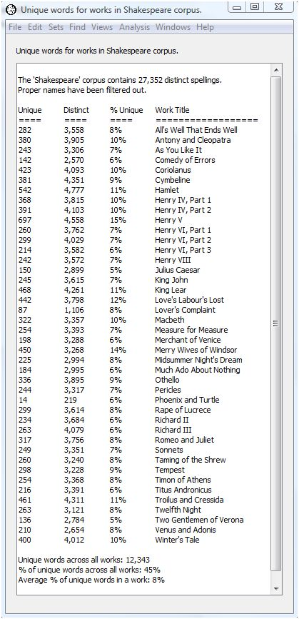

|
|
|
Does Shakespeare use mostly the same vocabulary in each of his works, or does he use different vocabulary? We can answer this question by finding out how many words appear uniquely in a single work in Shakespeare. The percent of words which appear in just one work compared to the total number of distinct words in Shakespeare tells us how varied is Shakespeare's vocabulary across all his works.
The following script automates the search for work-specific unique words as follows. The steps are:
When compiling the list of unique words, we should probably ignore words that are proper names. We do this by ignoring words whose word class is "np". We also ignore case and diacritical marks.
/** Check if spelling or lemma is a proper name. * * @param word The spelling or lemma to check. * The string takes the form "word (wordclasses)" * where "wordclasses" is a list of hypen- * separated wordclass markers. The word class * for a proper name is "np". * * @return true if the word is a proper name. e.g., * its word class list contains "np". */ boolean isProperName( String word ) { boolean result = false; // Extract the word classes which appear in // parentheses after the characters in the word. // Spellings may have a compound word class // when they are composed to two or more lemmata // (e.g., for contractions). We use a built-in // WordHoard utility method to extract the // word class tags. wordClasses = WordUtils.extractWordClassTags( word.toString() ); // Check if any of the word classes is "np." // We exit the loop as soon as we find an "np" // word class. for ( int i = 0 ; i < wordClasses.length ; i++ ) { result = result || wordClasses[ i ].equals( "np" ); if ( result ) break; } return result; } // ----- Main part of script begins here. ----- // Display something so we know the script is starting. print( "" ); print( "Analysis started." ); // The corpus to analyze. corpusName = "Shakespeare"; // Counts for distinct words in corpus. corpusWordCounts = new TreeMap(); // Map with work as key and // distinct words (as WordHoard Spelling objects) // and associated counts in work as value. workMap = new TreeMap(); // Set to true to ignore words that are // proper names (word class="np"). ignoreProperNames = true; // Choose whether to count case and diacritical // insensitive spellings or case and // diacritical insensitive lemmata. // = 0: spellings // = 1: lemmata wordType = 0; // Get the specified corpus. corpus = getCorpus( corpusName ); if ( corpus == null ) { print( "Corpus '" + corpusName + "' not found." ); exit; } // Get the works in the specified // corpus. corpusWorks = corpus.getWorks(); // Retrieve distinct words for // each work in corpus. // Use these to accumulate // list of distinct words in corpus. for ( Work work : corpusWorks ) { // Get spelling or lemmata strings // and associated counts for each word in // the work. workWordCounts = getWordCounts( work , wordType ); // Optionally ignore words that are proper names. if ( ignoreProperNames ) { // Create an iterator over the the words. // We use an explicit iterator because we want to // be able to delete words whose word class list // includes "np" for proper names. We use the // standard Java "iterator.remove()" method to do this. for ( Iterator iterator = workWordCounts.keySet().iterator() ; iterator.hasNext() ; ) { // Get the next distinct word in this work. word = iterator.next(); // If the word is a proper name, remove it from // the list of words in this work. We use the // toString operator to ensure we get the string // part of the Spelling object. if ( isProperName( word.toString() ) ) { iterator.remove(); } } } // Add the words and their counts for this work // to the total for the corpus. addCountMap( corpusWordCounts , workWordCounts ); // Save the list of distinct words // and counts for this work. workMap{ work.getShortTitle() } = workWordCounts; } // Accumulates output into a Java String // using a print writer. StringWriter sw = new StringWriter(); PrintWriter pw = new PrintWriter( sw ); // Output count of distinct words // in corpus. pw.println(); pw.println( "The '" + corpusName + "' corpus contains " + Formatters.formatIntegerWithCommas( corpusWordCounts.size() ) + " distinct " + ( ( wordType == 0 ) ? "spellings." : "lemmata." ) ); if ( ignoreProperNames ) { pw.println( "Proper names have been filtered out." ); } pw.println(); pw.println( "Unique\tDistinct\t% Unique\tWork Title" ); pw.println( "====\t====\t====\t==================" ); // Tabulate the sum of the unique words. uniqueSum = 0; // Tabulate the sum of the unique word percents. // We will use this to calculate the average percent. sumPercents = 0.0D; // For each work, find the // words which are unique to that // work. for ( String workTitle : workMap.keySet() ) { // Get the list of distinct words // in this work. workWordCounts = workMap{ workTitle }; // Get a copy of the word count map // for the corpus. corpusWordCountsCopy = copyCountMap( corpusWordCounts ); // Subtract the word counts in this work. subtractCountMap( corpusWordCountsCopy , workWordCounts ); // Substract the count of words in the reduced // corpus from the count in the full corpus. // This gives the number of words unique to the // current work. uniqueToWorkWordsCount = corpusWordCounts.size() - corpusWordCountsCopy.size(); // Count of distinct words in this work. int distinctWordsInWork = workWordCounts.size(); // Get percent of words unique to this work by // dividing count of words unique to this work // by number of distinct words in this work. percent = 100.0D * ( (double)uniqueToWorkWordsCount / distinctWordsInWork ); // Add this percent to running total. sumPercents += percent; // Print the results. pw.println( Formatters.formatIntegerWithCommas( uniqueToWorkWordsCount ) + "\t" + Formatters.formatIntegerWithCommas( distinctWordsInWork ) + "\t" + round( percent ) + "%\t" + workTitle ); // Add count of unique words for this work to // the total across all works. uniqueSum += uniqueToWorkWordsCount; } // Calculate percent of unique words across all // works and average percent of unique words in // each work. acrossWorksPercent = round( 100.0D * (double)uniqueSum / corpusWordCounts.size() ); averageWorkPercent = round( sumPercents / workMap.size() ); // Output percentages to results. pw.println(); pw.println( "Unique words across all works: " + Formatters.formatIntegerWithCommas( uniqueSum ) ); pw.println( "% of unique words across all works: " + acrossWorksPercent + "%" ); pw.println( "Average % of unique words in a work: " + averageWorkPercent + "%" ); pw.println(); pw.flush(); // Display output in a new WordHoard window. String title = "Unique words for works in " + corpusName + " corpus."; addResults( title , title , sw ); // Display something to show analysis complete. print( "Analysis done." ); |
Running this script on spellings produces the following output. Since the output appears in a regular WordHoard window, you can save the output to a file, print the output, or copy selected portions to the clipboard for import to other programs.

One line appears for each of Shakespeare's works. The first column gives the number of distinct words which do not appear in any other work of Shakespeare -- that is, they appear uniquely in this work. The second column tells the number of distinct words in the work. The third column tells the percent of unique words in the work. The fourth column is the short work title.
There are 27,352 distinct spellings in Shakespeare ignoring proper names. Of these, 12,343 or 45% appear in just one work. Almost half the words Shakespeare uses appear in only a single work. The average percent of words unique to an individual work is 8%. This means that on average, 8% of the words in any given work of Shakespeare do not recur in any work.
So the answer to our original question -- does Shakespeare use mostly the same vocabulary in all his works? -- is no.
|
|
|